The metal that wires the energy transition is heading for a ~30% supply gap by 2035 — and the harder we dig, the dirtier each tonne gets. Copper's carbon problem is a scarcity problem.
A plain-language synthesis & cost / time / solution analysis — with carbon-removal context and CarbonSig modeling notes.
Bottom Line Up Front
The argument in one breath. Copper is only ~0.2–0.3% of global emissions today3,4 — but it is the metal that builds decarbonization: EVs, grids, wind, solar, data centers. Demand is set to roughly double from ~25 Mt to ~50 Mt by 2035,2 while the current mine pipeline points to a ~30% supply deficit by then (40%+ in a net-zero world).1 Copper's twist versus steel and aluminium: there is no overcapacity lock-in to dismantle — the problem is building enough clean new supply fast enough. And a structural headwind fights back: ore grades have fallen ~40% since 1991, so each tonne requires moving more rock and more energy, pushing carbon intensity up even as producers electrify.1,6 Industry-average cradle-to-gate intensity is ~4.3 tCO₂e/t today;6 the abatement levers — clean power, electrified fleets, alternative fuels, and recycling — can cut up to ~85% by 2050.10
This brief mirrors our steel and aluminium analyses, recast for copper's distinct physics. It treats the problem along the three axes a strategist controls — cost, time, and solution mix — adds the missing context on carbon removals and direct air capture (DAC), and closes with how a product-level platform (CarbonSig) lets a miner, smelter, or buyer model these choices for a single mine, product, site, or company.
The framing again treats carbon as money. As declining grades push intensity up and demand makes copper strategically scarce, a verified low-carbon premium is emerging — offtake buyers (automakers, grid operators) increasingly pay for clean, traceable copper, while high-carbon, opaque metal faces a discount and procurement exclusion.8,9
Exhibit 01 · The Problem, Sized
A tonne of primary copper cathode averages ~4.3 tCO₂e cradle-to-gate (2024).6 Unlike aluminium (one dominant electricity hotspot), copper's carbon is spread across the chain: diesel-burning haul fleets and grinding in mining, fossil-fired furnaces in smelting, and grid electricity in refining. Recycling sidesteps most of it — 70–85% lower.46
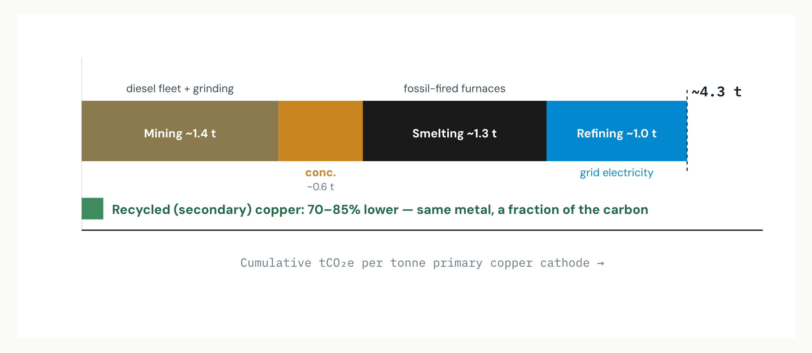
Read: Because the carbon is spread, copper needs a portfolio of fixes (fleet, furnace, grid) rather than one silver bullet — and recycling, which skips mining and smelting entirely, is the single biggest avoided-emission lever. Source: CRU industry-average ~4.3 tCO₂e/t (2024);6 stage split indicative of ICA archetypes;10 recycling 70–85% lower.46
Exhibit 02 · The Driver
Copper's defining force is not a lock-in but a demand shock. S&P Global projects demand roughly doubling from ~25 Mt (2020) to ~50 Mt by 2035, sustained to ~53 Mt by 2050 — more than all the copper used between 1900 and 2021.2 An EV uses ~2.5× the copper of a combustion car; grids, wind, solar and now AI data centers (250–550 kt/yr by 2030) pile on.1,2
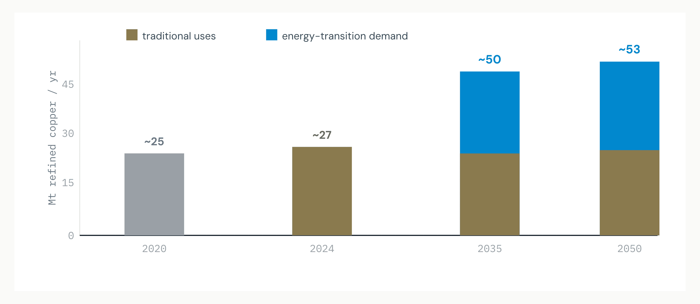
Read: The strategic question is not how to shrink copper, but how to grow it cleanly — the opposite of the steel/aluminium overcapacity story. Source: S&P Global "Future of Copper" (~25→50 Mt by 2035, 53 Mt by 2050);2 IEA Critical Minerals Outlook 2025;1 AI data-center demand.59
Exhibit 03 · Why It Matters
Copper's own footprint is small — ~0.2–0.3% of global GHG — but it is the enabling metal for technologies that abate far more elsewhere.3,4 Its strategic weight is in the multiplier: every clean-energy system needs copper, so a copper shortfall throttles the entire transition. That makes availability, not just intensity, a climate variable.
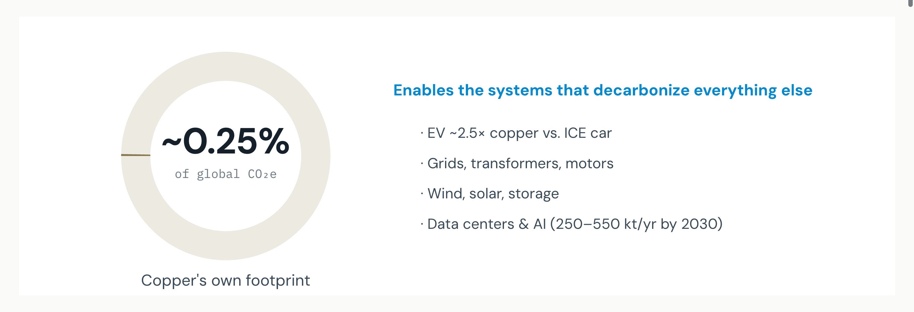
Read: Copper is a climate enabler first and an emitter second — which is why securing clean supply is itself a decarbonization strategy. Source: ICA (~0.2% of global GHG);3 CarbonChain (0.2–0.3%);4 S&P / IEA on EV & data-center intensity.1,2
Exhibit 04 · The Master Insight
This is copper's defining fact. On the current pipeline, the IEA projects a ~30% supply deficit by 2035 under Stated Policies — widening to 35% (Announced Pledges) and 40%+ (Net Zero).1 The causes are structural: declining grades, ~17-year mine lead times, and a discovery drought (only 14 major deposits found in the last decade vs. 225 in the prior 23 years).1
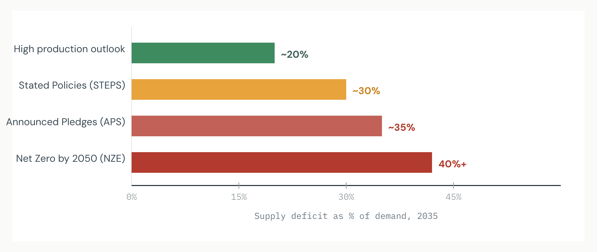
Read: Copper scarcity is a decarbonization risk in its own right — closing the gap means building ~80 new sizable mines by 2040, ideally low-carbon ones. Source: IEA Global Critical Minerals Outlook 2025 (30% STEPS / 35% APS / 40%+ NZE; ~17-yr lead times; discovery drought).1,59
Exhibit 05 · The Solution Set
Copper's levers differ from steel's routes and aluminium's grid. Because emissions are spread across diesel fleets, furnaces and grids, the ladder is a portfolio: recycling (cheapest, supply-bound), clean grid power for refining, fleet electrification / renewable diesel for mining, furnace fuel-switching for smelting, and CCS for concentrated off-gas.10,70
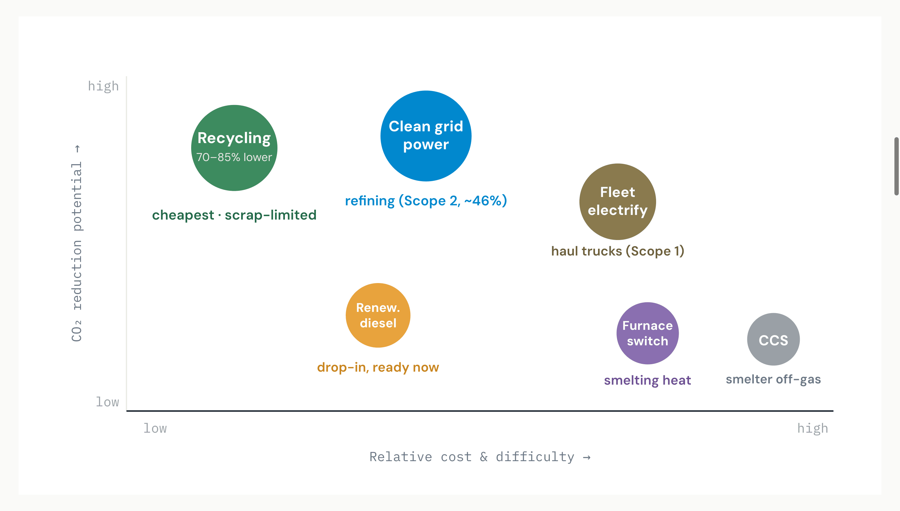
Read: No single move solves copper — it takes a stacked portfolio. Recycling and clean grid power are the cheapest, highest-impact; fleet and furnace decarbonization tackle the diesel and heat that grids can't. Source: ICA four abatement levers;10,71 Rio Tinto renewable-diesel & electrification programs;70 green-hydrogen haul-truck pilots.78 Positions indicative.
Exhibit 06 · The Headwind
Here is copper's cruelest mechanic. Average ore grades have fallen ~40% since 1991.1 Lower grade means more rock crushed, hauled and processed per tonne of finished metal — so energy and emissions per tonne rise even as producers switch to cleaner power. CRU's verdict: cradle-to-gate intensity stays roughly flat to 2050 as falling grades cancel out Scope 2 gains, leaving the industry on a >+3°C path without stronger action.6
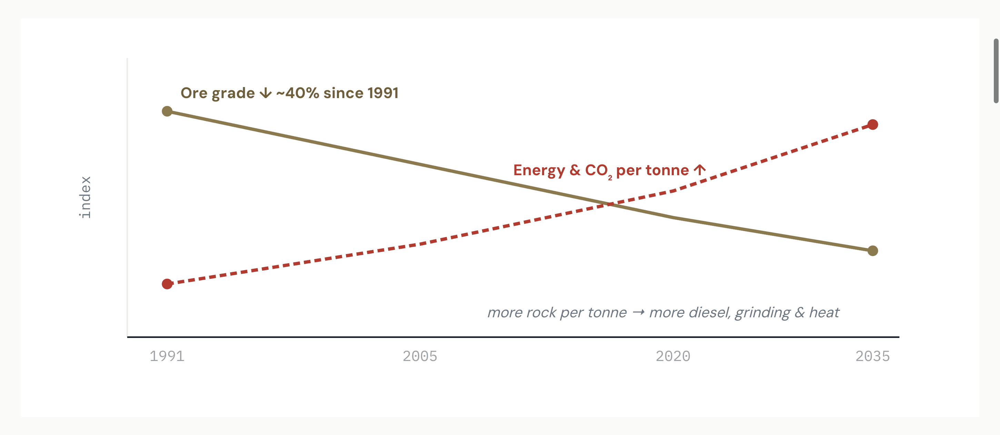
Read: Copper has to run hard just to stand still on intensity — the reason its emissions trajectory needs active abatement, not just a greening grid. Source: IEA (grades −40% since 1991);1 CRU (intensity ~flat to 2050, >+3°C base case).6 Lines stylized.
Exhibit 07 · The Two Routes
Copper splits into two production routes by ore type. Pyrometallurgy (heat-based, for sulfide ores) is ~80% of primary output: concentrate → smelt → electro-refine, with emissions from fossil-fired furnaces.48 Hydrometallurgy (leach → solvent-extract → electrowin, for oxide ores) is ~20% and can be up to ~3× less carbon-intensive — but it only suits certain ores and depends on clean electricity for electrowinning.4
Read: The dominant sulfide/pyro route is the harder one to decarbonize — its high-temperature furnace heat resists electrification — which is why furnace fuel-switching and CCS matter despite their cost. Source: CarbonChain (route split, hydro up to 3× lower);4,48 ICA archetypes.10
McKinsey-style read Copper's abatement is a two-route portfolio problem: clean electricity nearly solves the hydro route, but the larger pyro route needs heat decarbonization (fuel-switch, hydrogen, CCS) that is costlier and slower. A producer's mix of sulfide vs. oxide ore largely sets its decarbonization difficulty — and its cost curve.
Exhibit 08 · Where The Cuts Come From
The ICA pathway reduces Scope 1&2 through four market-ready levers: decarbonized electricity, alternative fuels, equipment electrification, and energy efficiency.10,71 Ordered on a marginal-abatement-cost logic, the cheap, ready-now moves (renewable diesel, grid power, efficiency) come first; deep electrification and heat decarbonization follow.
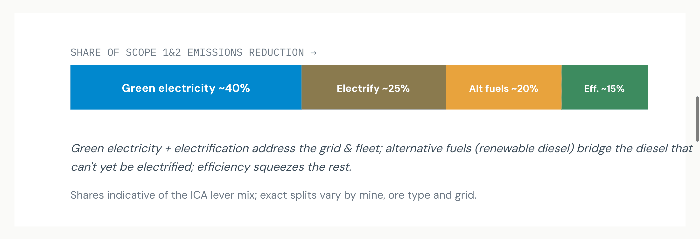
Read: About a quarter of near-term cuts come from negative- or low-cost levers (efficiency, drop-in renewable diesel); the deeper cuts need clean grids and fleet electrification. Source: ICA four abatement levers;10,71 MACC prioritization logic.72 Indicative shares.
Exhibit 09 · The Scope Split
Refined copper emitted ~97 MtCO₂e in 2018 across ICA members.10 The split is revealing: Scope 2 (purchased electricity) is 46%, Scope 3 is 31%, and Scope 1 (direct, mostly diesel & furnaces) is 23%.10 Nearly half the problem is grid electricity — which is why green power is the largest single lever, but cannot finish the job alone.
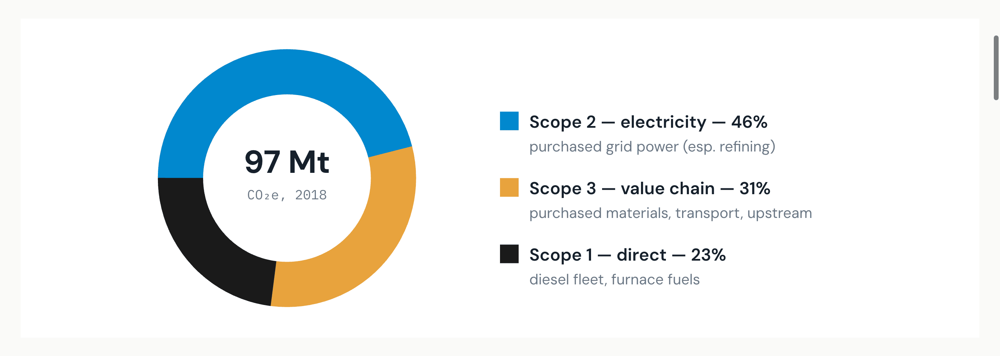
Read: Decarbonizing the grid attacks the biggest slice, but 54% sits in Scope 1 & 3 — diesel, furnace heat and the supply chain — so fleet electrification, fuel-switching and supplier engagement are all required. Source: ICA "Pathway to Net Zero" (97 MtCO₂e 2018; Scope 2 46% / Scope 3 31% / Scope 1 23%).10
Exhibit 10 · Time
The ICA pathway sets clear Scope 1&2 milestones: −30–40% by 2030, −70–80% by 2040, and up to −85% by 2050, with Scope 3 following more slowly.10 Real progress is already visible — Rio Tinto's Kennecott cut Scope 1 by ~495 kt/yr via renewable diesel (−65% since 2019); Ivanhoe's Kamoa-Kakula cut per-unit emissions ~46% with an on-site hydro-powered smelter.71,67
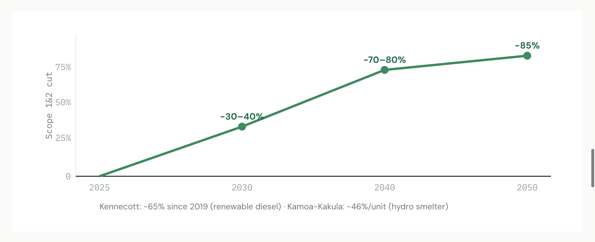
Read: The trajectory is front-loaded and already underway — the milestones are demanding but backed by live producer programs. Source: ICA pathway (−30–40%/2030, −70–80%/2040, ~85%/2050);10 Rio Tinto Kennecott;71 Ivanhoe Kamoa-Kakula.67
Exhibit 11 · The Circular Lever
Copper is infinitely recyclable without quality loss, and secondary copper already supplies ~40% of production.4 Recycled copper emits 70–85% less CO₂ than primary — the single largest avoided-emission lever, and one that also eases the supply gap.46 BHP and others see recycling as critical to meeting demand over the next 30 years.1
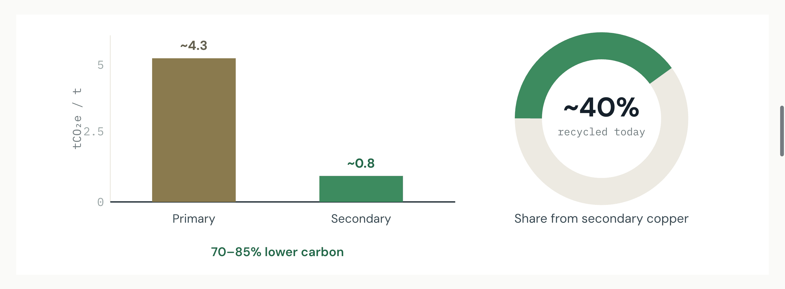
Read: Recycling is the rare lever that cuts carbon and narrows the supply gap — but scrap availability and collection rates cap how fast it can scale. Source: CarbonChain (infinitely recyclable; ~40% secondary);4 70–85% lower CO₂ from scrap;46 BHP via IEA.1
Exhibit 12 · The Playbook
Across analyses, copper's playbook converges on four structural moves. Unlike steel (one route swap) or aluminium (one power switch), copper needs all four in parallel because its emissions are spread across the chain.10
Source: ICA four abatement levers + recycling;10 renewable diesel & electrification per Rio Tinto;71 hydrogen haul-truck pilots;78 recycling 70–85% lower.46
The contrast with steel & aluminium Steel decarbonizes by rebuilding plants (route swap); aluminium by rewiring them (power switch). Copper has no overcapacity to retire — its task is to build vast new clean supply against a falling-grade headwind, using a four-lever portfolio. Carbon and scarcity are the same problem.
Exhibit 13 · Carbon Removals & DAC
Copper's residual emissions are concentrated in high-temperature smelting heat and diesel haulage that can't yet electrify.6 The honest hierarchy avoids first and removes last. Because clean power and recycling can take much of the chain close to zero, the removal burden is modest — but smelter off-gas (a concentrated CO₂ stream) is a genuine CCS candidate, and DAC backstops the irreducible residual.
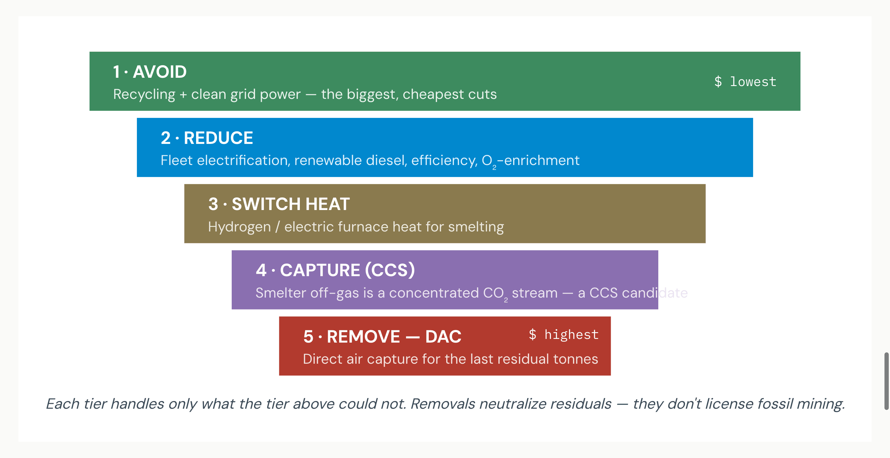
Read: Smelter off-gas CCS is more practical for copper than for many sectors because the CO₂ stream is concentrated; DAC remains the costly backstop for diesel and dispersed residuals. Source: CRU on hard-to-electrify heat & haulage;6 ICA levers.10 DAC/CCS tiers are analytical context, not single-source claims.
Carbon-as-money lens Price each lever. Recycling and clean power buy avoided tonnes cheaply; fleet and furnace decarbonization cost more; engineered removals — CCS on smelter off-gas, and especially DAC — are the priciest and should cover only the irreducible residual. With a verified low-carbon copper premium emerging, a clean traceable tonne earns more; an opaque high-carbon tonne risks procurement exclusion by automakers and grid buyers.8,9
Exhibit 14 · Risk
Copper's transition is feasible but fights structural headwinds. Four barriers govern execution — distinct, and together exhaustive of the feasibility question.
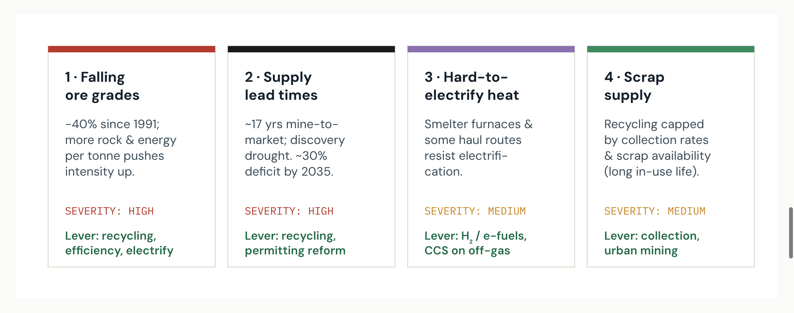
Read: The two HIGH risks — falling grades and supply lead times — are the same scarcity problem viewed two ways. Recycling is the lever that eases both. Source: IEA (grades, lead times, deficit);1 CRU (hard-to-electrify heat);6 ICA.10
Exhibit 15 · From Macro Pathway to the Mine Site
The IEA, ICA and CRU work answers the question at global / sector resolution. A miner, smelter, or copper buyer (automaker, cable maker, grid operator) needs the same logic at mine, product, site and company resolution — with verifiable, premium-ready numbers. CarbonSig digitally twins the copper value chain — mine → concentrate → smelt → refine → cathode — and lets every node be re-priced for carbon, cost and low-carbon premium.12
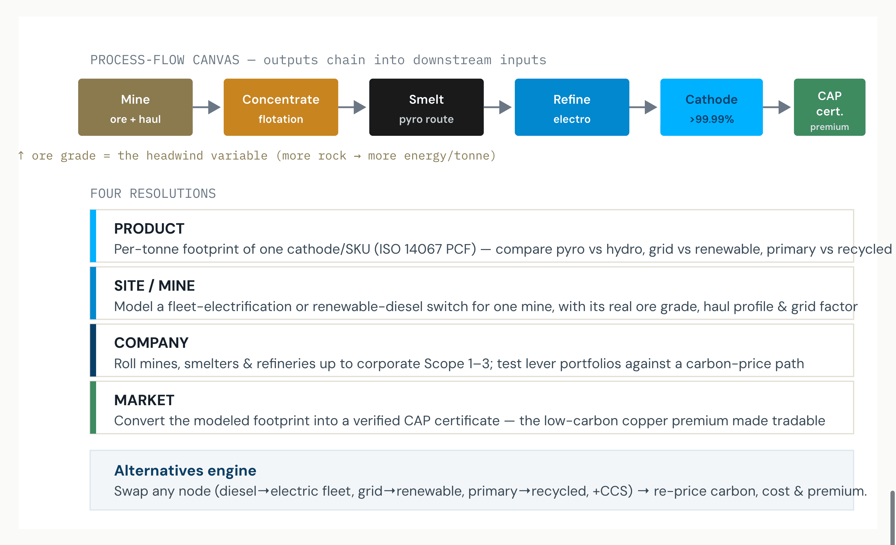
How it maps to the pathway: the four levers (Exhibit 08), the two routes (Exhibit 07), recycling (Exhibit 11) and the grade headwind (Exhibit 06) become editable nodes; Scope 1–3 (Exhibit 09) is captured natively; the output is an auditable, premium-ready certificate. CarbonSig platform notes — copper chain modeled per CarbonSig CaRMa capabilities.12
The synthesis. The sector consensus (IEA, S&P, ICA, CRU) is clear: copper demand roughly doubles by 2035 into a ~30% supply gap, falling grades fight intensity gains, and a four-lever portfolio can still cut ~85% by 2050.1,2,10 CarbonSig operationalizes that at the resolution a buyer or financier can transact on — the mine, the product, the company — converting a modeled tonne of avoided or removed carbon into a verifiable premium.
Sources & Authorities
Exhibits 13 (DAC/CCS tiers) and 15 (CarbonSig modeling stack) are analytical context contributed by this brief, not single-source claims. Per-tonne stage breakdowns (Exhibit 01), lever shares (Exhibit 08) and the grade/intensity lines (Exhibit 06) are indicative syntheses of the cited ranges; headline figures (~25→50 Mt, ~30% deficit, −40% grade, ~4.3 t/t, 46/31/23 scope split, ~85% cut) are sourced as cited. References 5 reserved for parity with the steel/aluminium briefs' numbering.